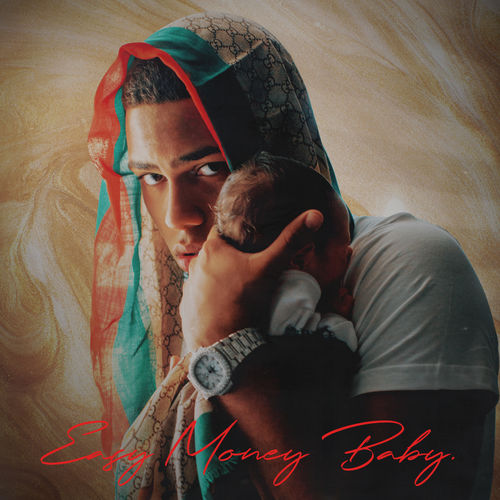

| Inicio | Discografia | Registrarse |
|---|
|  |
Easy Money Baby es el nombre del álbum de estudio debut del rapero puertorriqueño Myke Towers. Fue publicado el 24 de enero de 2020 a través de White World Music. Cuenta con únicamente la colaboración del cantante Farruko en «Si se da». |
| Nombre de canción | Producir canción | |
| 1 | MIB | |
| 2 | Tú | |
| 3 | Parcerita | |
| 4 | Una noche más | |
| 5 | Si Se Da | |
| 6 | Fugaz | |
| 7 | LVCC | |
| 8 | La Playa | |
| 9 | Relación rota | |
| 10 | Girl | |
| 11 | Viral | |
| 12 | Diosa | |
| 13 | Hechizo | |
| 14 | Piensan | |
| 15 | Tiene que saber | |
| 16 | Otro | |
| 17 | Ronca | |
| 18 | Funeral |